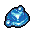

Blue jelly
| Blue jelly | |
|---|---|
 | |
General Information
| |
Type :
|
Mob Drop |
Stack size:
|
30 |
Source(s)
| |
| Dungeon | |
Study Information
| |
Study reward:
|
|
Decomposition Products
| |
| Acceleration solution Acceleration extract | |

Blue jelly is a mob drop, obtained by killing blue slimes, found only within the dungeon. It's primary use is to serve as an alchemical material, able to be broken down into reagents once studied, alongside honey and hemp.
Study
| Study table | |||
|---|---|---|---|
| Tech Points | Resources Required | Energy | Notes |
| 1× Faith 1× Science |
- |
Decomposes into: fluid and essence | |
Alchemy
Blue jelly can be decomposed into solution and extract with the hand mixer and any of the distillation cubes, respectively. Having unlocked Master of Alchemy produces one additional reagent at any workstation.
| Hand mixer | |
|---|---|
| Item Produced | Materials Required |
| 2× Acceleration solution |
1× Blue jelly |
| Distillation cube | |
| Item Produced | Materials Required |
| 2× Acceleration extract |
1× Blue jelly |
| Distillation cube II | |
| Item Produced | Materials Required |
| 3× Acceleration extract |
1× Blue jelly |
| ||||||||